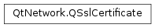

QSslCertificate¶
Synopsis¶
Functions¶
- def
__eq__(other) - def
__ne__(other) - def
clear() - def
digest([algorithm=QCryptographicHash.Md5]) - def
effectiveDate() - def
expiryDate() - def
extensions() - def
handle() - def
isBlacklisted() - def
isNull() - def
isSelfSigned() - def
issuerInfo(attribute) - def
issuerInfo(info) - def
issuerInfoAttributes() - def
publicKey() - def
serialNumber() - def
subjectAlternativeNames() - def
subjectInfo(attribute) - def
subjectInfo(info) - def
subjectInfoAttributes() - def
swap(other) - def
toDer() - def
toPem() - def
toText() - def
version()
Static functions¶
- def
fromData(data[, format=QSsl.Pem]) - def
fromDevice(device[, format=QSsl.Pem]) - def
fromPath(path[, format=QSsl.Pem[, syntax=QRegExp.FixedString]]) - def
importPkcs12(device, key, cert[, caCertificates=nullptr[, passPhrase=QByteArray()]]) - def
verify(certificateChain[, hostName=”“])
Detailed Description¶
The
PySide2.QtNetwork.QSslCertificateclass provides a convenient API for an X509 certificate.
PySide2.QtNetwork.QSslCertificatestores an X509 certificate, and is commonly used to verify the identity and store information about the local host, a remotely connected peer, or a trusted third party Certificate Authority.There are many ways to construct a
PySide2.QtNetwork.QSslCertificate. The most common way is to callQSslSocket.peerCertificate(), which returns aPySide2.QtNetwork.QSslCertificateobject, orQSslSocket.peerCertificateChain(), which returns a list of them. You can also load certificates from a DER (binary) or PEM (Base64) encoded bundle, typically stored as one or more local files, or in a Qt Resource.You can call
PySide2.QtNetwork.QSslCertificate.isNull()to check if your certificate is null. By default,PySide2.QtNetwork.QSslCertificateconstructs a null certificate. A null certificate is invalid, but an invalid certificate is not necessarily null. If you want to reset all contents in a certificate, callPySide2.QtNetwork.QSslCertificate.clear().After loading a certificate, you can find information about the certificate, its subject, and its issuer, by calling one of the many accessor functions, including
PySide2.QtNetwork.QSslCertificate.version(),PySide2.QtNetwork.QSslCertificate.serialNumber(),PySide2.QtNetwork.QSslCertificate.issuerInfo()andPySide2.QtNetwork.QSslCertificate.subjectInfo(). You can callPySide2.QtNetwork.QSslCertificate.effectiveDate()andPySide2.QtNetwork.QSslCertificate.expiryDate()to check when the certificate starts being effective and when it expires. ThePySide2.QtNetwork.QSslCertificate.publicKey()function returns the certificate subject’s public key as aPySide2.QtNetwork.QSslKey. You can callPySide2.QtNetwork.QSslCertificate.issuerInfo()orPySide2.QtNetwork.QSslCertificate.subjectInfo()to get detailed information about the certificate issuer and its subject.Internally,
PySide2.QtNetwork.QSslCertificateis stored as an X509 structure. You can access this handle by callingPySide2.QtNetwork.QSslCertificate.handle(), but the results are likely to not be portable.
-
class
PySide2.QtNetwork.QSslCertificate(device[, format=QSsl.Pem])¶ -
class
PySide2.QtNetwork.QSslCertificate([data=QByteArray()[, format=QSsl.Pem]]) -
class
PySide2.QtNetwork.QSslCertificate(other) Parameters: - data –
PySide2.QtCore.QByteArray - format –
PySide2.QtNetwork.QSsl.EncodingFormat - device –
PySide2.QtCore.QIODevice - other –
PySide2.QtNetwork.QSslCertificate
Constructs a
PySide2.QtNetwork.QSslCertificateby readingformatencoded data fromdeviceand using the first certificate found. You can later callPySide2.QtNetwork.QSslCertificate.isNull()to see ifdevicecontained a certificate, and if this certificate was loaded successfully.Constructs a
PySide2.QtNetwork.QSslCertificateby parsing theformatencodeddataand using the first available certificate found. You can later callPySide2.QtNetwork.QSslCertificate.isNull()to see ifdatacontained a certificate, and if this certificate was loaded successfully.Constructs an identical copy of
other.- data –
-
PySide2.QtNetwork.QSslCertificate.SubjectInfo¶ Describes keys that you can pass to
QSslCertificate.issuerInfo()orQSslCertificate.subjectInfo()to get information about the certificate issuer or subject.Constant Description QSslCertificate.Organization “O” The name of the organization. QSslCertificate.CommonName “CN” The common name; most often this is used to store the host name. QSslCertificate.LocalityName “L” The locality. QSslCertificate.OrganizationalUnitName “OU” The organizational unit name. QSslCertificate.CountryName “C” The country. QSslCertificate.StateOrProvinceName “ST” The state or province. QSslCertificate.DistinguishedNameQualifier The distinguished name qualifier QSslCertificate.SerialNumber The certificate’s serial number QSslCertificate.EmailAddress The email address associated with the certificate
-
PySide2.QtNetwork.QSslCertificate.clear()¶ Clears the contents of this certificate, making it a null certificate.
-
PySide2.QtNetwork.QSslCertificate.digest([algorithm=QCryptographicHash.Md5])¶ Parameters: algorithm – PySide2.QtCore.QCryptographicHash.AlgorithmReturn type: PySide2.QtCore.QByteArrayReturns a cryptographic digest of this certificate. By default, an MD5 digest will be generated, but you can also specify a custom
algorithm.
-
PySide2.QtNetwork.QSslCertificate.effectiveDate()¶ Return type: PySide2.QtCore.QDateTimeReturns the date-time that the certificate becomes valid, or an empty
PySide2.QtCore.QDateTimeif this is a null certificate.
-
PySide2.QtNetwork.QSslCertificate.expiryDate()¶ Return type: PySide2.QtCore.QDateTimeReturns the date-time that the certificate expires, or an empty
PySide2.QtCore.QDateTimeif this is a null certificate.
-
PySide2.QtNetwork.QSslCertificate.extensions()¶ Return type: Returns a list containing the X509 extensions of this certificate.
-
static
PySide2.QtNetwork.QSslCertificate.fromData(data[, format=QSsl.Pem])¶ Parameters: - data –
PySide2.QtCore.QByteArray - format –
PySide2.QtNetwork.QSsl.EncodingFormat
Return type: Searches for and parses all certificates in
datathat are encoded in the specifiedformatand returns them in a list of certificates.- data –
-
static
PySide2.QtNetwork.QSslCertificate.fromDevice(device[, format=QSsl.Pem])¶ Parameters: - device –
PySide2.QtCore.QIODevice - format –
PySide2.QtNetwork.QSsl.EncodingFormat
Return type: Searches for and parses all certificates in
devicethat are encoded in the specifiedformatand returns them in a list of certificates.- device –
-
static
PySide2.QtNetwork.QSslCertificate.fromPath(path[, format=QSsl.Pem[, syntax=QRegExp.FixedString]])¶ Parameters: - path – unicode
- format –
PySide2.QtNetwork.QSsl.EncodingFormat - syntax –
PySide2.QtCore.QRegExp.PatternSyntax
Return type: Searches all files in the
pathfor certificates encoded in the specifiedformatand returns them in a list.pathmust be a file or a pattern matching one or more files, as specified bysyntax.Example:
for cert in QSslCertificate.fromPath('C:/ssl/certificate.*.pem', QSsL.Pem, QRegExp.Wildcard): print cert.issuerInfo(QSslCertificate.Organization)
-
PySide2.QtNetwork.QSslCertificate.handle()¶ Return type: PySide2.QtCore.Qt::HANDLEReturns a pointer to the native certificate handle, if there is one, or a null pointer otherwise.
You can use this handle, together with the native API, to access extended information about the certificate.
Warning
Use of this function has a high probability of being non-portable, and its return value may vary from platform to platform or change from minor release to minor release.
-
static
PySide2.QtNetwork.QSslCertificate.importPkcs12(device, key, cert[, caCertificates=nullptr[, passPhrase=QByteArray()]])¶ Parameters: - device –
PySide2.QtCore.QIODevice - key –
PySide2.QtNetwork.QSslKey - cert –
PySide2.QtNetwork.QSslCertificate - caCertificates –
QList - passPhrase –
PySide2.QtCore.QByteArray
Return type: PySide2.QtCore.boolImports a PKCS#12 (pfx) file from the specified
device. A PKCS#12 file is a bundle that can contain a number of certificates and keys. This method reads a singlekey, itscertificateand any associatedcaCertificatesfrom the bundle. If apassPhraseis specified then this will be used to decrypt the bundle. Returnstrueif the PKCS#12 file was successfully loaded.Note
The
devicemust be open and ready to be read from.- device –
-
PySide2.QtNetwork.QSslCertificate.isBlacklisted()¶ Return type: PySide2.QtCore.boolReturns
trueif this certificate is blacklisted; otherwise returnsfalse.
-
PySide2.QtNetwork.QSslCertificate.isNull()¶ Return type: PySide2.QtCore.boolReturns
trueif this is a null certificate (i.e., a certificate with no contents); otherwise returnsfalse.By default,
PySide2.QtNetwork.QSslCertificateconstructs a null certificate.
-
PySide2.QtNetwork.QSslCertificate.isSelfSigned()¶ Return type: PySide2.QtCore.boolReturns
trueif this certificate is self signed; otherwise returnsfalse.A certificate is considered self-signed its issuer and subject are identical.
-
PySide2.QtNetwork.QSslCertificate.issuerInfo(attribute)¶ Parameters: attribute – PySide2.QtCore.QByteArrayReturn type: list of strings Returns the issuer information for
attributefrom the certificate, or an empty list if there is no information forattributein the certificate. There can be more than one entry for an attribute.
-
PySide2.QtNetwork.QSslCertificate.issuerInfo(info) Parameters: info – PySide2.QtNetwork.QSslCertificate.SubjectInfoReturn type: list of strings Returns the issuer information for the
subjectfrom the certificate, or an empty list if there is no information forsubjectin the certificate. There can be more than one entry of each type.
-
PySide2.QtNetwork.QSslCertificate.issuerInfoAttributes()¶ Return type: Returns a list of the attributes that have values in the issuer information of this certificate. The information associated with a given attribute can be accessed using the
PySide2.QtNetwork.QSslCertificate.issuerInfo()method. Note that this list may include the OIDs for any elements that are not known by the SSL backend.
-
PySide2.QtNetwork.QSslCertificate.__ne__(other)¶ Parameters: other – PySide2.QtNetwork.QSslCertificateReturn type: PySide2.QtCore.boolReturns
trueif this certificate is not the same asother; otherwise returnsfalse.
-
PySide2.QtNetwork.QSslCertificate.__eq__(other)¶ Parameters: other – PySide2.QtNetwork.QSslCertificateReturn type: PySide2.QtCore.boolReturns
trueif this certificate is the same asother; otherwise returnsfalse.
-
PySide2.QtNetwork.QSslCertificate.publicKey()¶ Return type: PySide2.QtNetwork.QSslKeyReturns the certificate subject’s public key.
-
PySide2.QtNetwork.QSslCertificate.serialNumber()¶ Return type: PySide2.QtCore.QByteArrayReturns the certificate’s serial number string in hexadecimal format.
-
PySide2.QtNetwork.QSslCertificate.subjectAlternativeNames()¶ Return type: Returns the list of alternative subject names for this certificate. The alternative names typically contain host names, optionally with wildcards, that are valid for this certificate.
These names are tested against the connected peer’s host name, if either the subject information for
CommonNamedoesn’t define a valid host name, or the subject info name doesn’t match the peer’s host name.
-
PySide2.QtNetwork.QSslCertificate.subjectInfo(attribute)¶ Parameters: attribute – PySide2.QtCore.QByteArrayReturn type: list of strings Returns the subject information for
attribute, or an empty list if there is no information forattributein the certificate. There can be more than one entry for an attribute.
-
PySide2.QtNetwork.QSslCertificate.subjectInfo(info) Parameters: info – PySide2.QtNetwork.QSslCertificate.SubjectInfoReturn type: list of strings Returns the information for the
subject, or an empty list if there is no information forsubjectin the certificate. There can be more than one entry of each type.
-
PySide2.QtNetwork.QSslCertificate.subjectInfoAttributes()¶ Return type: Returns a list of the attributes that have values in the subject information of this certificate. The information associated with a given attribute can be accessed using the
PySide2.QtNetwork.QSslCertificate.subjectInfo()method. Note that this list may include the OIDs for any elements that are not known by the SSL backend.
-
PySide2.QtNetwork.QSslCertificate.swap(other)¶ Parameters: other – PySide2.QtNetwork.QSslCertificateSwaps this certificate instance with
other. This function is very fast and never fails.
-
PySide2.QtNetwork.QSslCertificate.toDer()¶ Return type: PySide2.QtCore.QByteArrayReturns this certificate converted to a DER (binary) encoded representation.
-
PySide2.QtNetwork.QSslCertificate.toPem()¶ Return type: PySide2.QtCore.QByteArrayReturns this certificate converted to a PEM (Base64) encoded representation.
-
PySide2.QtNetwork.QSslCertificate.toText()¶ Return type: unicode Returns this certificate converted to a human-readable text representation.
-
static
PySide2.QtNetwork.QSslCertificate.verify(certificateChain[, hostName=""])¶ Parameters: - certificateChain –
- hostName – unicode
Return type: Verifies a certificate chain. The chain to be verified is passed in the
certificateChainparameter. The first certificate in the list should be the leaf certificate of the chain to be verified. IfhostNameis specified then the certificate is also checked to see if it is valid for the specified host name.Note that the root (CA) certificate should not be included in the list to be verified, this will be looked up automatically either using the CA list specified by
QSslSocket.defaultCaCertificates()or, if possible, it will be loaded on demand on Unix.
-
PySide2.QtNetwork.QSslCertificate.version()¶ Return type: PySide2.QtCore.QByteArrayReturns the certificate’s version string.
© 2018 The Qt Company Ltd. Documentation contributions included herein are the copyrights of their respective owners. The documentation provided herein is licensed under the terms of the GNU Free Documentation License version 1.3 as published by the Free Software Foundation. Qt and respective logos are trademarks of The Qt Company Ltd. in Finland and/or other countries worldwide. All other trademarks are property of their respective owners.